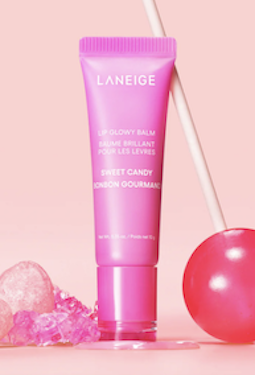
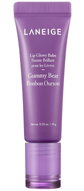
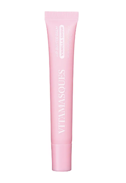

Project Play is a project that combines Project Pan in a rotating schedule.

Sweet Candy by Laneige is one
of my favorites. It is currently
in my rotation in mini size.

Gummy Bear by Laneige
is another class my
current rotation in mini size.

I enjoy using the Vanilla Snow
Vitamasques in my rotation currently